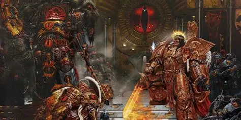

Aux origines
La guerre au paradis
Un conflit mythique entre les Anciens et les Nécrontyrs bouleverse le destin de la galaxie.
Au 41e millénaire, l’Imperium lutte pour sa survie face aux xénos, aux hérétiques et aux puissances du Warp. Entrez dans un univers où la guerre ne connaît aucune fin.
Explorer l’univers ↓
Un millénaire de guerre
Des âges légendaires
Des civilisations oubliées aux heures les plus sombres de l’Imperium, chaque époque laisse sa cicatrice dans la galaxie.
Aux origines
Un conflit mythique entre les Anciens et les Nécrontyrs bouleverse le destin de la galaxie.

La grande trahison
La rébellion du Maître de Guerre déchire l’Imperium et conduit l’Empereur au Trône d’Or.

La fin d’un monde
La perte de Cadia ouvre une cicatrice dans la réalité et plonge la galaxie dans le chaos.
Le père de l’Imperium
Vénéré comme un dieu et pourtant prisonnier de son Trône d’Or, l’Empereur demeure le symbole de la résistance humaine face aux ténèbres.
Découvrir les personnages →